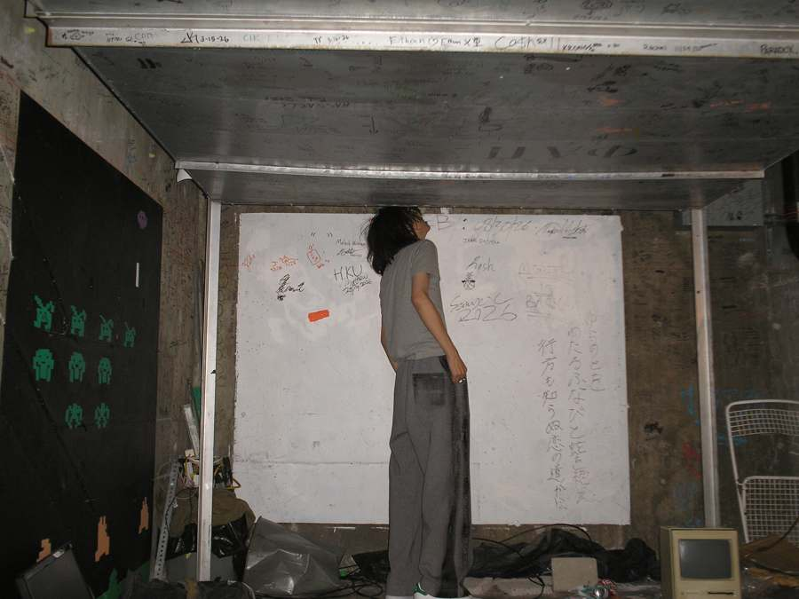

A side record of How to Make (Almost) Anything: the rooms, shops and floors I found my way into while making things, and how the door opened each time. It is kept off the main site and behind a door of its own.
Photographs are taken only where it is allowed. Nothing here is a research lab.
Ground rules
Ask first.Leave it as you found it.Don't photograph research.
Places
2026PlaceBuilding, roomhow
2026PlaceBuilding, roomhow
2026PlaceBuilding, roomhow
Colophon
Set in ABC Diatype (Instrument Sans fallback) and Anton.Floor plan: MIT Media Lab building map, E14–E15.Built by hand, no CMS.